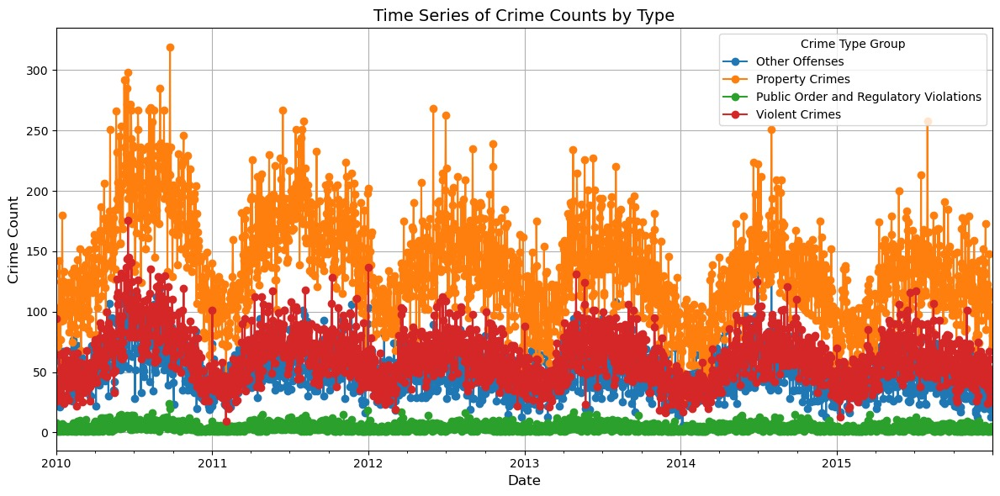
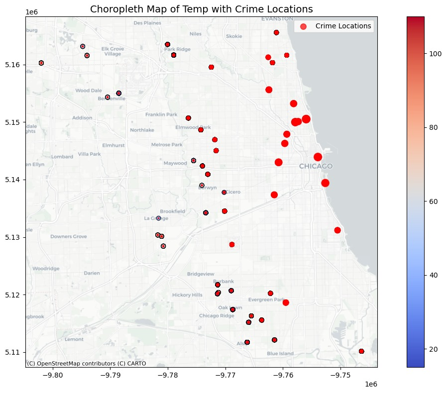

import pandas as pd
import geopandas as gpd
import shapely
import pandas as pd
from shapely.geometry import Point
import matplotlib.pyplot as plt
import altair as alt
import numpy as np
import shinyDAP II: Final Project
Workflow and team members
Genevieve Madigan: Madigan989 -responsibility: write up and data visualization Summer Negahdar: Summer99D -responsibility: creation of shiny app and data visualization Jenny Zhong: datapolicypython -responsibility: data cleaning and preparation
Introduction and prior articles
Research Question
Our project investigates the impact of temperature on crime rates in Chicago, focusing on both violent and non-violent crimes. Specifically, our research question is: How does weather affect the occurrence and types of crimes within specific ZIP codes in Chicago? Inspired by a study published in the Journal of Criminal Justice (2015–2021) analyzing the temperature-crime relationship across multiple cities, we extended this work to a different time frame (2010–2015). This allowed us to test the study’s conclusions during a period of varying political leadership, economic conditions, and macro trends. Understanding these dynamics can inform public safety strategies and resource allocation in response to climate patterns. Prior research, including the temperature-aggression hypothesis (Kahn, Deschenes, and Greenstone, 2009) and routine activity theory (Gottfredson and Hirschi, 1990), shows that environmental factors significantly affect criminal activity. These frameworks suggest higher temperatures may increase aggression, while weather influences daily activities, affecting crime opportunities.
Methodology
To conduct our analysis, we utilized two primary datasets. The crime data was retrieved from the Chicago Data Portal, spanning the years 2004 to 2015. Due to the large size of this dataset, we narrowed our scope to focus on the period from 2010 to 2015 to make the analysis more computationally manageable. Weather data was acquired from the National Oceanic and Atmospheric Administration’s (NOAA) daily summaries, providing average, minimum, and maximum temperatures for the city of Chicago. To analyze the spatial relationship between crime and weather data, we mapped latitude and longitude coordinates to ZIP Codes using ZIP Code Tabulation Area (ZCTA) shapefiles from the U.S. Census Bureau’s TIGER/Line database. The data preparation process involved several steps. First, we loaded the ZCTA shapefiles into Python as GeoDataFrames using the geopandas library and reprojected them to the EPSG:4326 coordinate system to ensure compatibility with the datasets. Next, latitude and longitude values from the crime and weather datasets were converted into shapely.geometry.Point objects to create geospatial geometries. To address precision issues near ZCTA boundaries, small buffers were applied to these points, which slightly expanded their spatial coverage. This step improved the accuracy of subsequent spatial joins by reducing mismatches caused by minor spatial discrepancies. Finally, a spatial join was performed using the gpd.sjoin() function to map each point to its corresponding ZCTA polygon. These ZCTAs were then translated into ZIP Codes, allowing us to align the crime and weather data spatially for analysis. This process ensured that each data point was correctly associated with its geographical context, enabling a robust examination of the relationship between temperature and crime across Chicago.
Challenges
The crime dataset initially posed significant challenges due to its size, totaling approximately 30GB. This required substantial computational resources for processing and analysis. To address this, we reduced the analysis time frame to 2010–2015, which decreased the dataset size to 13GB. While this adjustment made the dataset more manageable, it still presented difficulties in terms of sharing and processing efficiently. Additionally, to visualize the data and build a functional Shiny app, we had to sample only 1% of the dataset to ensure the app could handle the data volume without performance issues. Geospatial analysis introduced further complexities. Mapping latitude and longitude coordinates to ZIP Codes required intensive computations, particularly when working with large datasets. Loading geographic centroids and resolving mismatches during spatial joins added delays to the workflow, highlighting the challenges of working with spatial data at this scale. Another issue we encountered was standardizing date formats across the crime and weather datasets. These inconsistencies necessitated additional preprocessing to align timeframes accurately, ensuring that the data could be integrated seamlessly for analysis. This step was critical to maintaining the temporal consistency required for our study.
Methodology with codes
Crime data: Merging crime data together and merging crime data with ZIP Code
- Loading data together
As mentioned above, after the presentation, we decided that we would shorten our datasets to 2010 - 2015 so it would be easier to load into our laptops. Subsequently, the code we have accommodates this change below.
First, we load the CSV datasets into dataframes into python
#crimes10 = pd.read_csv('Crimes2010.csv')
#crimes1112 = pd.read_csv('Crimes20112012.csv')
#crimes131415 = pd.read_csv('Crimes201320142015.csv')Then we examine the columns of crime data
#print("2010 Columns:", crimes10.columns)We then merge the datasets together so we have a crime rate dataset from 2010 - 2015 and examine it.
#totalcrimedata = pd.concat([crimes2010, crimes1112, crimes131415])
#print(totalcrimedata.info())Summary statistics for numerical columns
#print(totalcrimedata.describe())Now we will convert the longitude and latitude in the crime data into ZIP Code by using an external shapefile and cross referencing this shapefile with our crime dataset
Load ZIP code shapefiles
#zip_shapes = gpd.read_file("/Users/jennyzhong/Documents/GitHub/final-Project-DAP-II/ZIP Code Shapefiles/tl_2015_us_zcta510.shp")Here, we are transforming spatial data into a consistent coordinate reference system (EPSG:4326), creating geometric points from longitude and latitude, and combining this data into a GeoDataFrame for spatial analysis.
#zip_shapes = zip_shapes.to_crs("EPSG:4326")
#print(zip_shapes.head())#geometry = [Point(xy) for xy in zip(totalcrimedata['Longitude'], totalcrimedata['Latitude'])]#crime_gdf = gpd.GeoDataFrame(totalcrimedata, geometry=geometry, crs="EPSG:4326")
#print(crime_gdf.head())Then we are creating buffer zones around each geometry point in crime_gdf with a radius of 0.01 units, modifying the geometry column to reflect these expanded areas.
#crime_gdf['geometry'] = crime_gdf.geometry.buffer(0.01)We are then performing a spatial join to match crime_gdf (containing crime data) with zip_shapes based on their spatial intersection, and saving the resulting data to a CSV file.
#matched_data = gpd.sjoin(crime_gdf, zip_shapes, how="left", predicate="intersects")
#matched_data.to_csv("filtered_crime_data.csv", index=False)Operate from CSV file
#matched_data = pd.read_csv("filtered_crime_data.csv")
#print(matched_data.head())Drop appropriate columns
#matched_data.drop(columns=['ID', 'District', 'Community Area', 'CLASSFP10', 'MTFCC10', 'FUNCSTAT10', 'ALAND10', 'AWATER10', 'FBI Code', 'Updated On', 'GEOID10'], inplace=True)
#print(matched_data.head())Convert the Date column to a datetime format
#matched_data['Date'] = pd.to_datetime(matched_data['Date'], errors='coerce')Create new columns (YearMonthDay and Time) to separately store the date and time components of the Date column.
#matched_data['YearMonthDay'] = matched_data['Date'].dt.date
#matched_data['Time'] = matched_data['Date'].dt.timeRearrange the columns to place YearMonthDay immediately after Case Number for better organization
#columns = matched_data.columns.tolist()
#columns.remove('YearMonthDay')
#columns.insert(columns.index('Case Number') + 1, 'YearMonthDay')
#matched_data = matched_data[columns]
#print(matched_data.columns)Save the cleaned and restructured data to a CSV file
#matched_data.to_csv("filtered_crime_data.csv", index=False)Merging weather data together and merging weather data with ZIP code
Merging all 2010 - 2015 datasets together. The process is similar to the above.
#weather2010 = pd.read_csv('AT2010.csv')
#weather2011 = pd.read_csv('AT2011.csv')
#weather2012 = pd.read_csv('AT2012.csv')
#weather2013 = pd.read_csv('AT2013.csv')
#weather2014 = pd.read_csv('AT2014.csv')
#weather2015 = pd.read_csv('AT2015.csv')#total_weather = pd.concat([weather2010, weather2011, weather2012, weather2013, weather2014, weather2015], ignore_index=True)Convert weather data to geodataframe
#geometry = [Point(xy) for xy in zip(total_weather['LONGITUDE'], total_weather['LATITUDE'])]
#weather_gdf = gpd.GeoDataFrame(total_weather, geometry=geometry)
#weather_gdf.set_crs("EPSG:4326", inplace=True)
#weather_gdf['geometry'] = weather_gdf.geometry.buffer(0.01)Load the ZIP Code Shapefile
#zip_shapefile = gpd.read_file('/Users/jennyzhong/Documents/GitHub/final-Project-DAP-II/ZIP_Code_Shapefiles/tl_2015_us_zcta510.shp')
#zip_shapefile = zip_shapefile.to_crs("EPSG:4326")Spatial join to match the zip codes
#weather_with_zip = gpd.sjoin(weather_gdf, zip_shapefile, how='left', predicate='intersects')
#print(weather_with_zip.head())Drop irrelevant dataframes:
#weather_with_zip.drop(["CLASSFP10", "MTFCC10", "FUNCSTAT10", "ALAND10", "AWATER10", "GEOID10"], axis=1, inplace=True)
#print(weather_with_zip)Final CSV file for weather
#weather_with_zip.to_csv("weather_with_zip.csv", index=False)Loading CSV file
#weatherfinal = pd.read_csv('/Users/jennyzhong/Documents/GitHub/final-Project-DAP-II/Final project/Weather_Data/weather_with_zip.csv')Dropping unnecessary columns
#weatherfinal.head(10)
#weatherfinal = weatherfinal.drop(columns=['TMAX', 'TMIN', 'ELEVATION', 'index_right'])Saving to a CSV file
#weatherfinal.to_csv('/Users/jennyzhong/Documents/GitHub/final-Project-DAP-II/Final project/Weather_Data/weather_raw.csv', index=False)Data experiment
Data Visualization
#merging the data #For the following data, we decided to filter the information down to #2010-2015 because 30 GB is way too much, the following code is how we #shrunk the data
##installing the necessary packages
#import pandas as pd
#import matplotlib.pyplot as plt
#import altair as alt
#import numpy as np
#import geopandas as gpd
#import shapely
#import shiny
#from shapely.geometry import Point
#import matplotlib.pyplot as plt
#from shapely.geometry import Point
#import pgeocodeData experiment
Data Visualization
merging the data For the following data, we decided to filter the information down to 2010-2015 because 30 GB is way too much, the following code is how we shrunk the data
#final_crime_data = pd.read_csv(r'C:\Users\madig\Documents\Github\Year 2024-2025\final-Project-DAP-II\final_crime_data.csv')
#final_weather_data = pd.read_csv(r'C:\Users\madig\Documents\Github\Year 2024-2025\final-Project-DAP-II\final_weather_data.csv')#final_crime_data = pd.read_csv(r'C:\Users\madig\Documents\Github\Year 2024-2025\final-Project-DAP-II\final_crime_data.csv')
#final_crime_data['DATE'] = pd.to_datetime(final_crime_data['YearMonthDay'])
#filtered_crime_data = final_crime_data[
# (final_crime_data['DATE'].dt.year >= 2010) & (final_crime_data['DATE'].dt.year <= 2015)
#]
#filtered_crime_data.to_csv('filtered_crime_data.csv', index=False)So this is the filtered data from 2010-2015
Crime data grouping and removing unneccesary columns
And making a function to group crime types
#filtered_weather_data = pd.read_csv(r'C:\Users\madig\Documents\Github\Year 2024-2025\final-Project-DAP-II\Final project\weatherfinal_cleaned.csv')
#filtered_crime_data = pd.read_csv(r'C:\Users\madig\Documents\Github\Year 2024-2025\final-Project-DAP-II\Final project\filtered_crime_data.csv')#unique_primary_types = filtered_crime_data['Primary Type'].unique()
#def categorize_crime(crime_type):
#if crime_type in ['BATTERY', 'ASSAULT', 'ROBBERY', 'SEX OFFENSE',
#'CRIM SEXUAL ASSAULT', 'CRIMINAL SEXUAL ASSAULT',
#'HOMICIDE', 'KIDNAPPING', 'STALKING', 'INTIMIDATION']:
#return 'Violent Crimes'
#elif crime_type in ['MOTOR VEHICLE THEFT', 'THEFT', 'BURGLARY',
#'CRIMINAL DAMAGE', 'ARSON', 'CRIMINAL TRESPASS']:
#return 'Property Crimes'
#elif crime_type in ['WEAPONS VIOLATION', 'PUBLIC PEACE VIOLATION',
#'LIQUOR LAW VIOLATION', 'OBSCENITY',
#'PUBLIC INDECENCY', 'CONCEALED CARRY LICENSE VIOLATION']:
# return 'Public Order and Regulatory Violations'
#else:
#return 'Other Offenses'
#filtered_crime_data['Crime Type Group'] = filtered_crime_data['Primary Type'].apply(categorize_crime)
#columns_to_drop = [
#'YearMonthDay', 'Block', 'IUCR', 'Primary Type', 'Description',
#'Location Description', 'Arrest', 'Domestic', 'Beat', 'Ward',
#'FBI Code', 'X Coordinate', 'Y Coordinate', 'Year', 'Location',
#'ID', 'District', 'Community Area', 'index_right', 'INTPTLAT10',
#'INTPTLON10'
#]
#filtered_crime_data = filtered_crime_data.drop(columns=columns_to_drop)
#filtered_crime_data = filtered_crime_data.dropna(subset=['ZCTA5CE10'])
#filtered_crime_data['ZCTA5CE10'] = filtered_crime_data['ZCTA5CE10'].astype(int)
#filtered_crime_data.rename(columns={'ZCTA5CE10': 'ZIP_CODE'}, inplace=True)
#print(filtered_crime_data.head())Merging two datasets (crime and weather) by Zipcode and Date column.
#filtered_crime_data['DATE'] = pd.to_datetime(filtered_crime_data['DATE'])
#filtered_weather_data['DATE'] = pd.to_datetime(filtered_weather_data['DATE'])
#crime_summary = filtered_crime_data.groupby(['DATE', 'ZIP_CODE', 'Crime Type Group']).size().reset_index(name='Crime Count')
#merged_data = pd.merge(crime_summary,
#filtered_weather_data[['DATE', 'ZIP_CODE', 'TAVG', 'geometry']],
#on=['DATE', 'ZIP_CODE'],
#how='inner')
#print(merged_data.head())
#merged_data.to_csv(r'C:\Users\madig\Documents\Github\Year 2024-2025\final-Project-DAP-II\Final project\merged_data.csv', index=False)Now that the data is filtered lets make the two charts
BarChart:
#import pandas as pd
#import matplotlib.pyplot as plt
#filtered_weather_data['TAVG_bin'] = pd.cut(
#filtered_weather_data['TAVG'],
#bins=range(int(filtered_weather_data['TAVG'].min()) // 15 * 15,
#int(filtered_weather_data['TAVG'].max()) // 15 * 15 + 15, 15),
# right=False
#)
#merged_data_with_bins = pd.merge(merged_data, filtered_weather_data[['DATE', 'TAVG_bin']], on='DATE',how='left')
#crime_distribution = merged_data_with_bins.groupby(['TAVG_bin', 'Crime Type Group'])['Crime Count'].sum().unstack(fill_value=0)
#crime_distribution.plot(kind='bar', stacked=True, figsize=(12, 7), width=0.9)
#plt.title('Crime Distribution by Temperature Range (Binned by 15)')
#plt.xlabel('Temperature Range (°F)')
#plt.ylabel('Total Crime Count')
#plt.xticks(rotation=45, ha='right')
#plt.legend(title='Crime Type Group')
#plt.grid(axis='y', linestyle='--', alpha=0.7)
#plt.tight_layout()
#plt.show()Geopandas Timeseries
#import geopandas as gpd
#import matplotlib.pyplot as plt
#import pandas as pd
#merged_data = gpd.GeoDataFrame(merged_data)
#merged_data["DATE"] = pd.to_datetime(merged_data["DATE"])
#time_series_data = merged_data.groupby(["DATE", "Crime Type Group"])["Crime Count"].sum().unstack()
#plt.figure(figsize=(12, 6))
#time_series_data.plot(ax=plt.gca(), marker='o')
#plt.title("Time Series of Crime Counts by Type", fontsize=14)
#plt.xlabel("Date", fontsize=12)
#plt.ylabel("Crime Count", fontsize=12)
#plt.legend(title="Crime Type Group")
#plt.grid(True)
#plt.tight_layout()
#plt.show()Cloropleth Map
#from shapely.wkt import loads
#merged_data['geometry'] = merged_data['geometry'].apply(loads)#import matplotlib.pyplot as plt
#import contextily as ctx
#merged_data = merged_data.set_geometry("geometry")
#if merged_data.crs is None:
#merged_data = merged_data.set_crs(epsg=4326)
#merged_data = merged_data.to_crs(epsg=3857)
#fig, ax = plt.subplots(figsize=(12, 8))
#merged_data.plot(
#column="TAVG",
#cmap="coolwarm",
#legend=True,
#alpha=0.6,
#edgecolor="black",
#ax=ax,
#)
#merged_data.plot(
#ax=ax,
#color="red",
#markersize=merged_data["Crime Count"] * 2,
# alpha=0.7,
#label="Crime Locations",
#)
#ctx.add_basemap(ax, source=ctx.providers.CartoDB.Positron)
#plt.title("Choropleth Map of Temp with Crime Locations", fontsize=14)
#plt.legend()
#plt.tight_layout()
#plt.show()We explain the following graphs here:
This bar chart demonstrates crime frequency across temperature ranges, revealing a significant increase in crimes at higher temperatures. This aligns with routine activity theory, as warmer temperatures encourage outdoor activities, potentially increasing encounters between offenders and victims. Conversely, fewer crimes generally occur in colder temperature ranges,, likely due to reduced outdoor activities and interactions. 
This chart illustrates the trend of crime occurrences over time, highlighting a noticeable increase during the summer months, suggesting a seasonal pattern in criminal activity. 
This choropleth map displays crime locations in Chicago, with points indicating crime occurrences and their color representing the temperature. Red points signify higher temperatures, while blue points indicate lower temperatures. The map shows that red points are more prominent, suggesting that crimes are more frequent during warmer weather. This highlights a possible connection between temperature and crime rates. 
Shiny App
please refer to the basic-app/app.py for the shiny app. here are the photos from the shiny app:


Policy Implications
Our findings demonstrate a positive correlation between temperature and violent crime rates, aligning with prior research on the relationship between environmental factors and criminal activity. This connection underscores the importance of understanding how temperature fluctuations influence public behavior and safety. From a public safety perspective, this insight allows police departments to better anticipate “busy seasons” for violent crimes, particularly during warmer months. With this knowledge, law enforcement agencies can optimize resource allocation, ensuring adequate staffing and preparation to handle increased workloads effectively. Additionally, the implications extend to the broader context of climate change. As global temperatures continue to rise, it becomes increasingly critical to assess and address the potential impacts on public safety. Policymakers can use this information to formulate strategies that mitigate the risks associated with climate-induced changes in crime patterns, contributing to more resilient urban environments.
Directions for Future Work
To broaden the scope and applicability of our findings, future research should expand the analysis to other American cities. This would help determine whether the patterns observed in Chicago are consistent across different urban contexts, offering a more comprehensive understanding of how temperature impacts crime in diverse environments. A global analysis could further enhance the study by assessing whether the relationship between temperature and crime is universal or shaped by cultural and geographic factors. Examining this phenomenon in international settings would provide valuable insights into the broader applicability of our findings and reveal potential variations influenced by societal norms and regional climates. Additionally, incorporating other variables such as humidity, unemployment rates, and urban density could create a more robust and nuanced model. These factors may interact with temperature in complex ways, offering a deeper understanding of the environmental and socio-economic drivers of crime. By expanding this research, we can gain a more thorough understanding of the intersection between climate, public safety, and social behavior, ultimately contributing to more informed policy and crime prevention strategies.